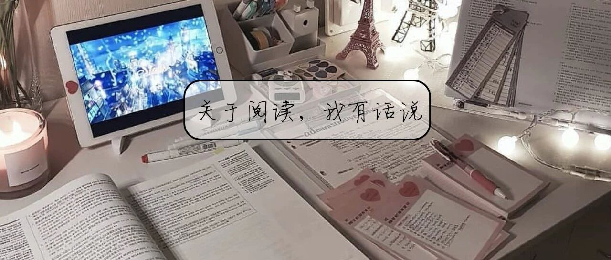

书单｜2019最后一天，用阅读来敬畏生活吧！
一 起 创 造 美 好 生 活

图：@秋秋
文：@秋秋
大家好，我是秋秋。又见面了～
在上次 我的时间管理攻略 里面，我曾说过每周会给自己一个新期待，而最近两周，我开始尝试按同类型来读书。
所以这次要和大家分享这个月我读完的3本书，它们有很多共同点：农民、朴素、执着、对生命的热情......希望看完之后，你也能从中获得力量。
在我上高中的时候，有一位和我同山东的老乡获得了诺贝尔文学奖。没错，他就是莫言。他出生在山东高密东北乡的农村，没有上过大学，但是以魔幻现实主义的手法获得了世界文学最高奖项。

*莫言在2012年诺贝尔文学奖颁奖现场
而那年我在读高中，喜欢看村上春树的书，在大学前都对一个观点深信不疑：作者去世小于十年的书，绝对不看。因此当时只挑一些作者早已经不在人世的书来读，认为他们的书才是经过了时间的考验。
所以一直到现在（我都大学毕业了），莫言的书我都没有读过。
现在想想会觉得很有遗憾，所以这次就和大家说一下我的感悟，以及这三本书给我的力量。

1.《蛙》


这本书是我看的莫言的第一本书，当时看完之后好几夜睡不着觉（因为里面的描写直击我心灵）。
下面我大致介绍下内容：书的大致内容是讲了一个生于四五十年代妇产科医生姑姑的一生。姑姑出生于40年代的一个抗战家族，父亲是师从白求恩上过战场的英雄医生，从小在村子里威望很高。战争结束后迎来生产高峰期，姑姑也在专业学校学习了医术。
但那时候还都是“产婆”接生的年代，她们技术落后也不卫生，所以姑姑19.20岁便用现代化的接生方法在村子里树立起威望。
接下来的几年，就是姑姑最好的时代，整个村、整个镇子上上千个小孩都是姑姑接生的，走到哪里都被欢迎。
而70年代之后，开始实行了计划生育。作为抗战家族、党员，姑姑也是坚决响应政府的号召，一个人人爱戴的妇产科医生，顷刻之间就变成了人人唾弃的“走狗”。
当时党的号召是“能引地引出来，能流地流出来，坚决不能生下来”，“宁可血流成河，不准超生一个”。

现在看政策确实有些严格（看了图真的毛骨悚然），但是姑姑知道是因为中国人口太多，未来几十年发展压力会很大；可老百姓根本不理解，所以中间在姑姑手里流产了很多很多孩子，其中6个月以上的婴孩不在少数。
就这样过了几十年，姑姑老了退休了，但是姑姑却发现自己的手上早已经沾满鲜血。在一次回家的路上，高密乡的夜晚蛙声鼎沸，就像小孩子的哭声一样让人不寒而栗。成千上万的青蛙从河里跳出来，夹带着粘液跳到姑姑的身上，一边口里清晰的喊着:还命来…..还命来….
书的名字叫《蛙》，谐音娃娃的娃，也暗示着这是一本和生育有关的小说（青蛙的繁衍能力很强）。在没看之前这个名字我觉得也许根本不能触动我，但是看了之后整个人都由内而外被触动到。
因为我自己，也算是计划生育的“见证者”。
虽然现在放开了二胎，但是在我小的时候（三四岁），也是跟着妈妈东躲西藏。我有一个哥哥，小时候他去上学我还经常跟着他去，上课的时候就坐在他的座位底下，以此来躲避计划生育的检查。
印象深刻的还有一次跑不及，我妈让我待在家里的衣橱里，不要说话；那时候我就看着黒黒的衣橱，觉得还有些好玩，但是又不能理解为什么我的要一直躲啊躲的…..
倒是那时候的人也都很团结，虽然是计划生育，但是大家还是互相维护着。每次有来检查的，村子里的人都会放大广播，然后大家就会带着小孩子到处跑。我们那时候经常会躲到一个桥洞下面，中午还会有大伯大叔来送吃的，就是当时也没有什么通讯设备，没有手机和网络，躲的时候也不能乱跑怕被发现，其实很无聊。
因为当时我也很小，所以很多事情都记不清了，但是那种感觉还很深刻。我记得书中最后有一个孕妇拖到快生产的时候，所有人都在旁边给她加油，“生下来就好了，生下来就是共产党的生命，就是公民，就有人权”，所以现在我长大了，我有生命，有人权，但是我知，我的生命，来之不易！
在小说中，我印象最深刻的是有一个母亲为了给家里生一个男孩，挺着7.8个月大的肚子，在外飘着不敢回家，终于在快要生的时候还是被姑姑发现了。
那母亲的羊水最后都破了，但是因为在姑姑追的过程中动了胎气，最后生了一个死胎，小孩子都成型了….当然那个母亲也难产死了......这和“姑姑”其实没有什么关系，但是执行这种政策的时候，真的就是活生生的毁掉生命。
所以我看书的时候就会想到那个时候我妈妈怀孕生我有多不容易……而且我不是男孩（我父母不是为了传宗接代那种力量非要生下我）。
当然看完之后感触还有很多，好像自己又看到了我小时候的一幕幕，每一个画面都那么清晰。我敬畏那些为了生育连命都不要的父亲母亲，现在的我真的很难想象为了生孩子东躲西藏，最后一无所有。那应该是种什么样的力量？很难说的清.......
所以这本书我真的想推荐给大家，每个人看后的感触也许不一样，但是关于那个年代的故事，真的很有力量。
2.《生死疲劳》

这本书是看了《蛙》之后，又接着看的，书比较厚，一打开的时候以为看了水浒传（因为里面的每一个篇名都起的很有意思）。
《生死疲劳》讲的是一个地主因为生前被冤枉杀死，在阎王爷那里也不服气，而一直转世投胎的故事，而在每一世里他投的东西都不一样，但是无一例外，都是畜生。
以我印象最深刻的驴来说，他投身驴还是到了自己家，但是发现自己生前的小妾都与家丁成了家，而他变成了家丁的驴。怀着愤恨，他本来是要报仇，但是在与那个家丁相处的过程中，竟然建立了深厚的情谊。
他们一起种地，拉着家丁的货上山赶集，曾经为了救人（驴）击退平原狼，在当地小有名气。后来驴被镇长看上了，整天骑着到处巡视工作，家丁心里不服也不好说什么。后来镇长摔在山上，驴也摔瘸了，没有人再去管驴，只有这个家丁。
所以整本书都是以投身后的畜生的视角来写的（后面也有家丁的儿子的视角），第三者的视角看家丁一生的变化，包括土地改革、合作社那些事情。
这本书其实比《蛙》厚很多，但是我看的比较快，因为里面看了不会让人心痛（遇到这种书看心里不舒服就会看的慢），就是农村里面打斗、农民的那种执拗的事情。
但是看完之后还是能感受到莫言一贯相承的那种风格。也到这本书里，我开始理解莫言为什么是魔幻现实主义？
因为很多东西像复仇，姻缘，轮回，他都写的都很魔幻：一个怀有冤屈的人可以转世为驴为牛为猪，一只只青蛙也可以是娃娃索命来，还有很多人间机缘巧合，现实中也没那么巧妙。但是很多事情又真实，因为每个人心里的那些惧怕，都是存在的；所有的机缘巧合，也都是现实的放大版。
记得有一次，我和一个姐姐聊天，她问我最近在看什么书，我说莫言。她就很奇怪问我为什么，我说：因为我的生活，没有那么强烈的恨、冤枉、或者不平（活的还算比较顺利），所以对于那个时代的故事，或者生活就更有兴趣。
但是看完了这两本书之后，我发现我不仅仅是想看那个年代有多悲哀，而是更想看到一种朴素，以及现在少有的一种朴实的情感，，对土地的热情，和对生命的存粹。
3.《红高梁家族》
这本书我在很早之前就粗略的读过，而且这本书改编成了张艺谋的电影还有电视剧版的《红高梁》，大家应该也不陌生。
那内容就不多说，大概就是讲了“奶奶”的故事（莫言的书不是姑姑就是奶奶，就是村子里的事）。奶奶被迫嫁了一个麻风病人，但是她并不甘心，路上就和土匪“成了亲”，后来又嫁过去操持住了一个大家庭，鼓励“土匪”去抗战的故事。
这个故事让我看完还有一种说不出的自豪感，可能我也是山东人，觉得自己有一点点那种女孩子的性格。而且“奶奶”这种女人在我周围真的也很常见，所以莫言写出来一点都不陌生。

这样说吧，我奶奶当年也是生产队的一把好手，一个人拉扯4.5个孩子长大，农活、做饭啥都不耽误。但是气血很高，气性大，所以我从来没见过她。
我男朋友的外婆也是，年轻的时候会骑马，还是党员，很泼辣干活也麻利。即使老了我见过几次，也总是提共产党的好好好，感觉很有热情的样子。
而之所以我看完之后有自豪感，应该是我身边确切的有这种人存在的原因。
山东人普遍就会给人豪爽、朴实还有点土的感觉，但是我觉得这都是表面的。我觉得山东人是对土地、生命都有热情的，而且也很执着，这是我们的优点（哈哈哈，为家乡代言一回）
三本书看完虽然都是悲剧为底色，但是看完之后还是整个人都充满力量，《蛙》是对生命的敬畏，《生死疲劳》是对土地的敬畏，《红高粱家族》是对生命的敬畏。每本书的每个人都对自己还有生活非常执着。
想活成什么样子或许他们不清晰，但是每个人都活得非常努力，非常用力。或许他们平凡，但是世界本就平凡。
我男朋友说，我现在写东西变的很口语话。以前的我，会觉得这很肤浅。让人读起来通顺的文章，一定是没有才华。而现在，我经常从头看到尾看很多书，都没有可以画波浪线的地方；但是书本一合，我的精神却又很不一样。
我知道，文字的力量来自于真实和作者本人的热情，一本文学著作中的经典语录单拿出来或许根本没有力量，但是它却能带来长久的影响。
现在我越来越喜欢余华、莫言、贾平凹、王小波这类人的书，我希望我写的东西也是这样，基于现实的，不急躁不焦躁，不矫揉不造作，能够经得起时间的考验。
当然，我的生活并没有太多大起大落，那我就真实的写写我身边的美好，如果读完我写的东西觉得更有希望或者更开心一点，也算是小确幸一件。
—正经时间☕️—
所以这次，我也想把我觉得好的东西与大家分享。就留言区抽3个朋友，各送书一本！（以上三本自选）。
留言你的2020年新年愿望、计划，或者想对秋秋说的话都可以～
参与方式：留言点赞前1.2.7名送
开奖时间：1月6号
其他文章推荐：

原创文章，转载请告知本人并标注来源
工作联系：17865514429 （微信）
请注明来意 :)
@微博：秋秋一日甜
喜欢记得星标，让我们一起成长